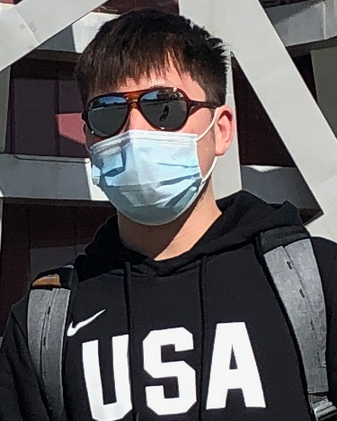

Youpeng (Kenneth) Zhao
ypz9695 [at] outlook [dot] com


Sometimes, it's the imperfect stuff that make things perfect.
I am broadly interested in machine learning, computer vision and data science. My current research involves AutoML and 3D vision.
I obtained my M.Sc. degree in ECE from Georgia Tech in 2020, advised by Yongxin Chen. Before that, I received my B.Eng. degree in Automation from Wuhan University in 2018, advised by Xiangtao Zhuan.
My English name is Kenneth, but people often call me Ken.
Experience
- Chinese Academy of Sciences, Beijing, China
08/2020 - 03/2021
Research Assistant @ NLPR
Advisor: Ge Yang
- Georgia Institute of Technology, Atlanta, USA
03/2019 - 12/2019
Graduate Research Assistant @ FLAIR Lab
Advisor: Yongxin Chen
Publications
- Probablitsic Inference for Camera Calibration under Circular Motion
Yuanhao Guo*, Youpeng Zhao*.
IEEE Transcations on Cybernectics. Under Review.
Projects
- CVPR 2021 NAS Challenge
Train one-shot SuperNet using weight sharing strategy to narrow the ranking performance between its child models and their individually trained models.3rd Place in Track 1 and 1st Place in Track 3.- 3D Probablitsic Modeling for Camera Calibration
Propose a novel probablistic view of camera calibration algorithm for 3D object reconstruction under circular motion.- Protein Detection for Cyro-Electron Microscopy via Deep Learning
Train deep neural networks to automatically detect protein particles in cryo-electron tomography images. The model is implemented with 3D U-Net and 3D CenterNet.
Fun Facts
- I used to play elecctronic keyboard and won a national prize in 2008.
- My first name is Youpeng (有朋), which means having lots of friends :)
- If given the chance to travel backwards, I would choose 1980s' Miami.
- I love George Michael and Friends.
- 3D Probablitsic Modeling for Camera Calibration
{kind=link}